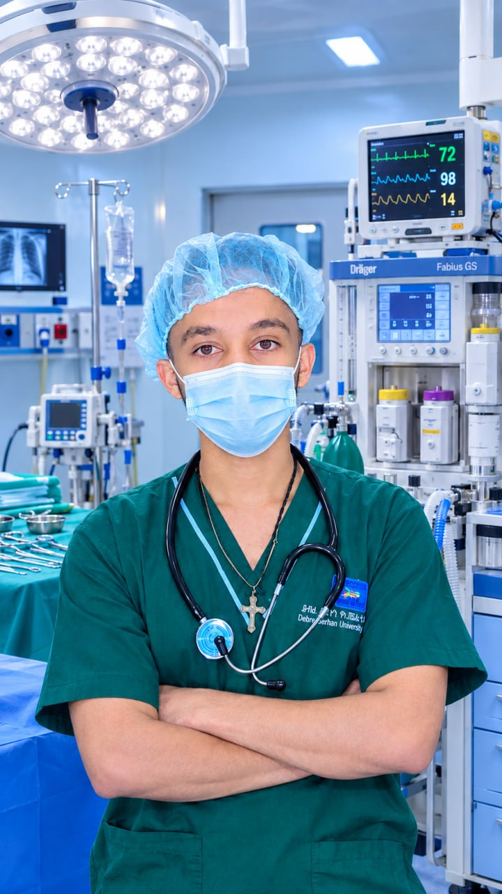

Precision Care in
Anesthesiology & Airway Management
I am Zerihun Getachew, a dedicated final-year Anesthesia student at Debre Berhan University. Trained across high-volume tertiary centers including Tikur Anbessa Specialized Hospital, St. Petros Comprehensive Specialized Hospital, and Menelik II Comprehensive Specialized Hospital, specializing in intra-operative patient care, rapid resuscitation, and advanced regional anesthesia.

Zerihun Getachew
B.Sc. Candidate in Anesthesia
Debre Berhan University • Senior Intern
Dedicated to Surgical Safety & Patient Comfort
Clinical Philosophy
Driven by a commitment to zero-avoidable-harm in operating rooms. Emphasizing methodical pre-operative evaluations, individualized anesthetic plan formulation, rapid intra-operative crisis response, and vigilant post-anesthetic monitoring.
Academic Excellence
Currently enrolled in the rigorous 4th-year B.Sc. Anesthesia program at Debre Berhan University (Asrat Woldeyes Health Campus). Mastering essential medical sciences, pharmacology, pathophysiology, and surgical anesthesia management.
Future Readiness
Preparing for immediate entry into major clinical, surgical, and emergency health setups. Equipped with procedural adaptability, strong inter-professional team communication, and an eagerness to stay updated with modern anesthesia technologies.
Clinical Rotations & Practicum
Extensive hands-on training completed across high-capacity regional and national referral centers.
Tikur Anbessa Specialized Hospital
Tertiary National Referral Center • Addis Ababa, Ethiopia
Core Clinical Responsibilities
- Assisted and administered general anesthesia for complex pediatric, neurosurgical, and cardiothoracic surgeries under consultant supervision.
- Managed difficult airways utilizing video laryngoscopy, fiberoptic guidance, and laryngeal mask airways (LMA).
- Conducted pre-anesthetic risk assessments (ASA scoring) and optimized high-risk patients pre-operatively.
Procedures & Mastery
Complete Surgical Subspecialty Experience
Surgical departments covered across all clinical rotations
Core Clinical Competencies
Interactive overview of skills developed through clinical practice and academic study.
Advanced Airway Management
Proficient in securing difficult airways under high-pressure elective and emergency conditions. Trained in applying various tools and predictive airway algorithms.
Highlighted Competencies
- Mallampati scoring and airway risk prediction
- Rapid Sequence Induction and Intubation (RSII)
- Awake intubation preparation protocols
- Management of accidental extubation crises
Clinical Highlights & Cases
Key case categories successfully managed under faculty supervision.
Emergency Cesarean Section Anesthesia
Performed subarachnoid block for urgent C-section cases. Successfully managed hemodynamic stability, prevented maternal hypotension with fluid boluses and vasopressors.
Pediatric Surgical Airway Management
Managed pediatric general anesthesia using smooth Sevoflurane mask induction, precise endotracheal tube sizing calculations, and careful fluid monitoring.
Regional Anesthesia for Limb Trauma
Assisted in peripheral nerve blocks and subarachnoid blocks for lower limb fracture repair, ensuring intra-operative analgesia and reduced post-operative opioid dependence.
Academic Qualifications & Training
Debre Berhan University • Asrat Woldeyes Health Campus
Contact Zerihun Getachew
Open for clinical opportunities, hospital placements, and professional consultations.
Direct Contact Details
Primary Location
Debre Berhan University
Asrat Woldeyes Health Campus, Ethiopia
Send a Message
Delivered directly to Zerihun Getachew's clinical email inbox